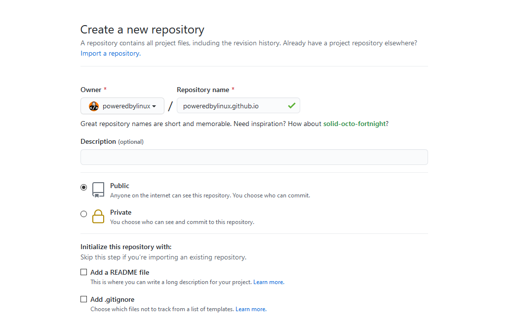

GitHub is a great software development platform. Here, I will show you how to host a website with GitHub Pages. I hosted this very website with GitHub Pages!
Go to GitHub.com and you will see a signup form. Enter a username, password and E-mail address and click "Sign up for GitHub".
Next, you will have to fill in some more details. Then, you may be asked to verify your E-mail address. Go to your inbox and open the verification mail. Click the verification link and fill in any additional required details. Once all that is done, congrats! Your account is ready to go.
To create a new repository, click "New" on the left.

Now, make sure you name the repository EXACTLY "YourUsername.github.io" and replace "YourUsername" with your username. Naming it right is important. If you name it wrong, your website won't be published!
After you're done, click "Create repository".
Now once your repository is created, it's time to fill it up! if you already have HTML documents on your computer, click "Upload files". There, you can drag and drop files or open the file chooser. If you haven't created an HTML document, you can just click "Create new file". Name it "index.html", because that's the name web browsers expect for the main page of your website. Type in all your codes, click "Commit changes" and your website will be published very soon! To view your website, just type "YourUsername.github.io" (replacing "YourUsername") and use the shortcut "Ctrl + Shift + R" or "Cmd + Shift + R" until your website appears. Why that shortcut? Because you'll need to clear the browser cache and reload the site. Cache files for a website are stored by the browser to speed up the loading time of a website.
Now that your website is ready, share it with your family, friends and celebrate!